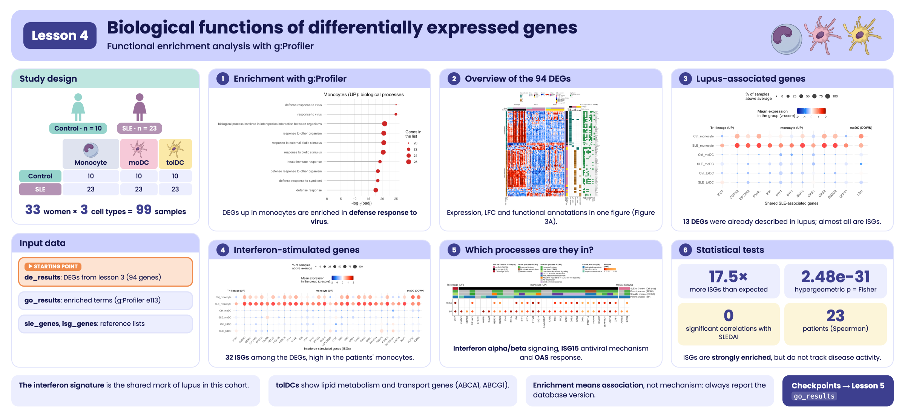
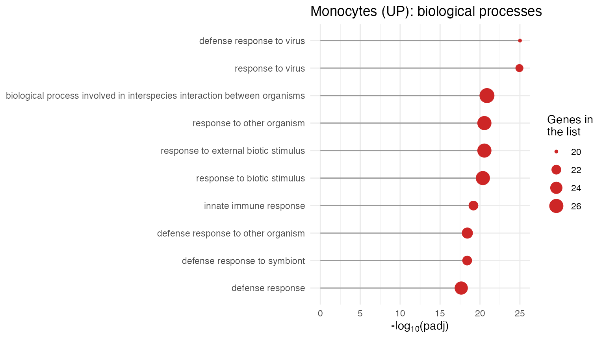
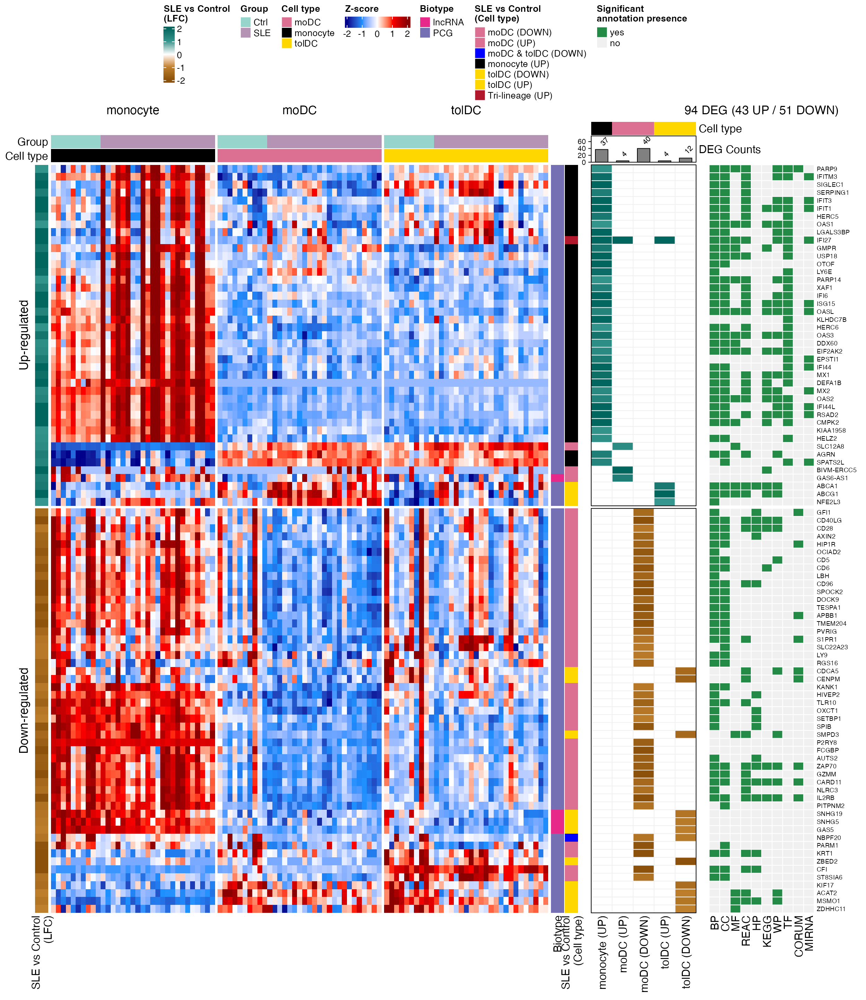
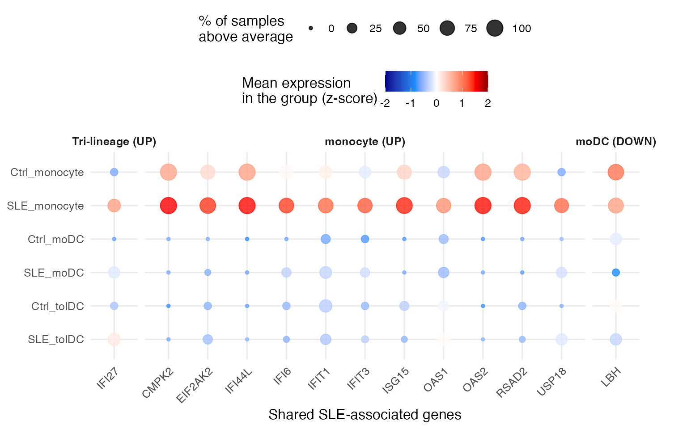
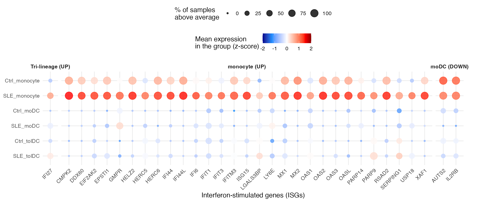
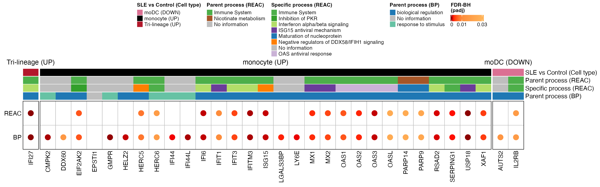
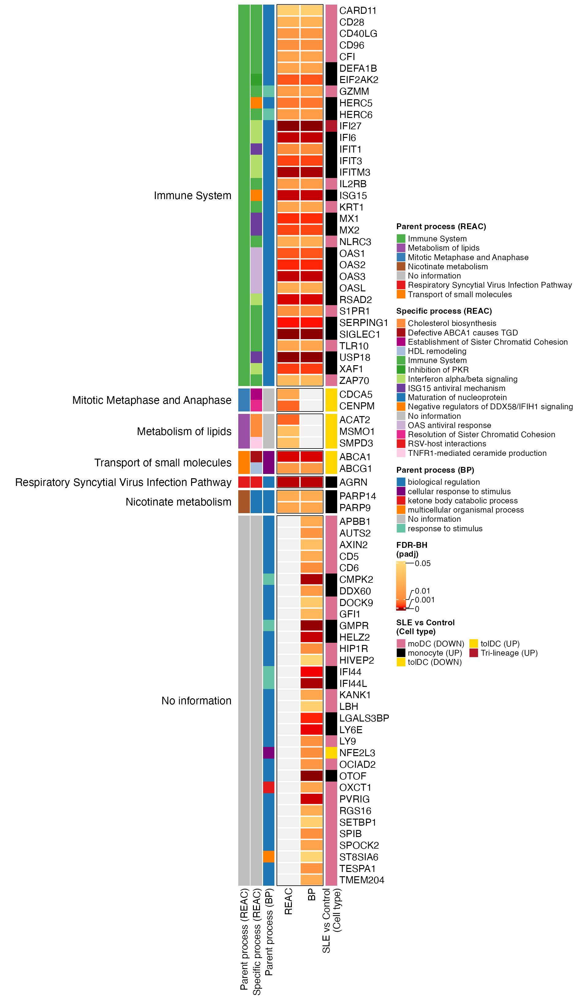
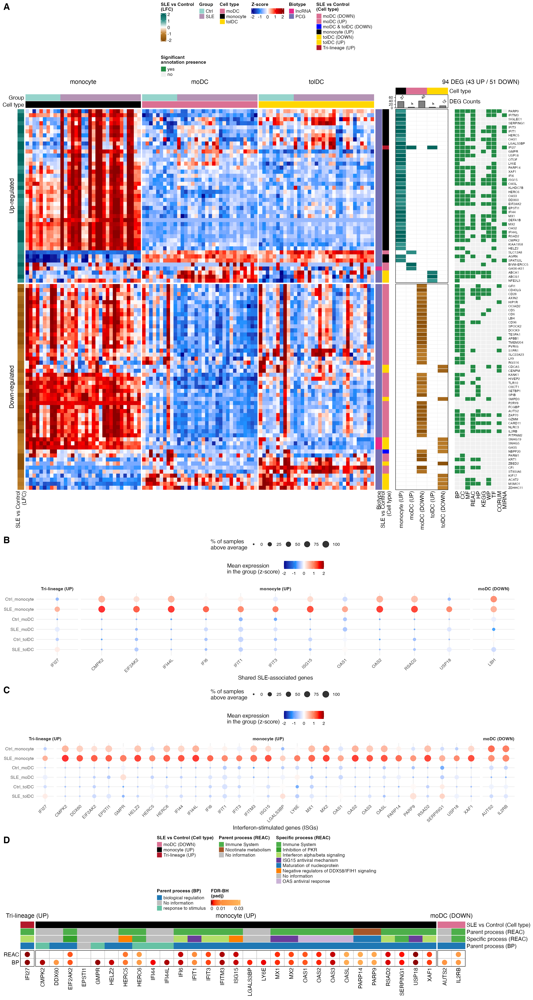

Lesson 4: Biological functions of differentially expressed genes
Functional enrichment analysis with g:Profiler
2026-10-28
Código:vignettes/l4_GOterms_en.Rmd
l4_GOterms_en.RmdWelcome
In the previous lesson we found 94 differentially expressed genes (DEGs) between lupus patients and controls. A list of genes, on its own, says little: the question now is what do these genes do, and do they take part in common biological processes?
What you need to know beforehand: you should have completed the lesson Differentially expressed genes between patients and controls.
By the end you will be able to:
- Explain what a functional enrichment analysis is and what question it answers.
- Run an enrichment analysis with g:Profiler and interpret its results.
- Recognize the main functional databases (Gene Ontology, Reactome, KEGG…).
- Identify lupus-associated genes and interferon-stimulated genes among the DEGs.
- Reproduce Figure 3 of the article.
- Correlate ISG expression with disease activity (SLEDAI).
Estimated time: 1.5 hours.
Lesson map
flowchart LR A["de_results
(lesson 3)"] --> B["94 DEGs by cell
type and direction"] B --> C["g:Profiler:
enrichment"] B --> D["Reference lists:
SLE and ISG"] C --> E["3A. DEG heatmaps,
LFC and annotations"] D --> F["3B and 3C. Dot plots"] C --> G["3D. REAC and BP processes"] E --> H["Figure 3"] F --> H G --> H D --> I["ISG vs SLEDAI:
Spearman"]
Glossary
These are the terms we will use. Come back here whenever you need to.
- Functional annotation: information about what a gene does (processes, pathways, localization…).
- Term: a functional category, for example “response to virus”, with its list of genes.
- Functional enrichment: tests whether a term appears in our gene list more often than expected by chance.
- Hypergeometric test: the statistical test behind enrichment (like drawing marbles from a bag without replacement).
- Gene Ontology (GO): a vocabulary of functions with three branches: biological process (BP), cellular component (CC), and molecular function (MF).
- Reactome (REAC), KEGG, WikiPathways (WP): databases of biological pathways.
- TF: transcription factor binding sites. MIRNA: microRNA targets. HP: human phenotypes. CORUM: protein complexes.
- Parent / specific term: databases are organized in hierarchies; a general (parent) term contains more specific terms.
- ISG (interferon-stimulated genes): genes that are switched on in response to interferon.
- SLEDAI (SLE Disease Activity Index): lupus activity score; higher = more active disease.
- Spearman correlation (rho): measures whether two variables go up or down together by comparing their ranks; it ranges from −1 to 1.

Visual summary of lesson 4.
1. Setup
library(GeneExprLupusMx) # package data
library(tidyverse) # table manipulation and plots
library(ComplexHeatmap) # heatmaps
library(circlize) # color scales for ComplexHeatmap
library(grid) # drawing shapes inside the heatmaps
library(cowplot) # combining plots into a panelColors and thresholds (the same as in the previous lesson):
cell_color <- c(monocyte = "black", moDC = "palevioletred", tolDC = "gold1")
group_color <- c(Ctrl = "#96d4ccff", SLE = "#b493b4ff")
lfc_threshold <- 1
padj_threshold <- 0.05Starting point: the DEGs from the previous lesson
The de_results checkpoint contains the
DESeq2 results for the three cell types. We gather the DEGs
into a single table:
deg_df <- bind_rows(lapply(names(de_results), function(cell) {
de_results[[cell]] %>%
filter(!is.na(padj), padj < padj_threshold, abs(log2FoldChange) >= lfc_threshold) %>%
mutate(Cell_type = cell,
Expression = ifelse(log2FoldChange > 0, "Up-regulated", "Down-regulated"),
query = paste("SLE", ifelse(log2FoldChange > 0, "UP", "DOWN"), cell, sep = "_"))
}))
dplyr::count(deg_df, query)
#> query n
#> 1 SLE_DOWN_moDC 40
#> 2 SLE_DOWN_tolDC 12
#> 3 SLE_UP_moDC 4
#> 4 SLE_UP_monocyte 37
#> 5 SLE_UP_tolDC 4Each combination of cell type and direction is a gene
list (query). Monocytes have no down-regulated
genes, so there are five lists.
The same gene can be a DEG in more than one cell type. For the plots we need one row per gene (94 genes) and a label describing its pattern: in which cell types it changes.
genes_in <- function(cell, direction) {
deg_df$gene[deg_df$Cell_type == cell & deg_df$Expression == direction]
}
gene_info <- deg_df %>%
distinct(gene, .keep_all = TRUE) %>% # one row per gene
mutate(pattern = case_when(
gene %in% Reduce(intersect, list(genes_in("monocyte", "Up-regulated"),
genes_in("moDC", "Up-regulated"),
genes_in("tolDC", "Up-regulated"))) ~ "Tri-lineage (UP)",
gene %in% intersect(genes_in("moDC", "Down-regulated"),
genes_in("tolDC", "Down-regulated")) ~ "moDC & tolDC (DOWN)",
gene %in% genes_in("monocyte", "Up-regulated") ~ "monocyte (UP)",
gene %in% genes_in("moDC", "Up-regulated") ~ "moDC (UP)",
gene %in% genes_in("moDC", "Down-regulated") ~ "moDC (DOWN)",
gene %in% genes_in("tolDC", "Up-regulated") ~ "tolDC (UP)",
gene %in% genes_in("tolDC", "Down-regulated") ~ "tolDC (DOWN)"))
dplyr::count(gene_info, pattern)
#> pattern n
#> 1 Tri-lineage (UP) 1
#> 2 moDC & tolDC (DOWN) 1
#> 3 moDC (DOWN) 39
#> 4 moDC (UP) 3
#> 5 monocyte (UP) 36
#> 6 tolDC (DOWN) 11
#> 7 tolDC (UP) 3Tri-lineage (UP) are the genes that go up in all
three cell types (only IFI27), and moDC & tolDC
(DOWN) are those that go down in both dendritic cell types.
2. What is an enrichment analysis?
Imagine a bag with 20,000 marbles (all the genes in the genome). 200 of them are red: the genes of a term, for example “response to virus”. We draw 37 marbles at random (our monocyte DEGs). We would expect to draw fewer than one red marble. If we draw 15, something is not down to chance: our genes are enriched in that term.
The hypergeometric test calculates how likely it is to draw that many red marbles by chance. Because thousands of terms are tested at once, the p-values are corrected (FDR), just as in differential expression.
Enrichment is not causation. A list being enriched in “response to virus” does not mean there is a virus: it means the genes that change tend to take part together in that function. It is a clue for generating hypotheses.
3. Step 1: enrichment with g:Profiler
g:Profiler queries
several databases at the same time (GO, Reactome, KEGG, WikiPathways,
TF, miRNA, HP, CORUM). In R it is used through the gost()
function of the gprofiler2 package:
library(gprofiler2)
deg_lists <- split(deg_df$gene, deg_df$query) # one gene list per query
# Archived version of g:Profiler (June 2025)
set_base_url("https://biit.cs.ut.ee/gprofiler_archive3/e113_eg59_p19")
gost_res <- gost(deg_lists,
organism = "hsapiens", # human
correction_method = "fdr", # multiple-testing correction
user_threshold = 0.05, # maximum padj
evcodes = TRUE) # include which genes each term hasDatabases change. g:Profiler updates its annotations
several times a year, so the same gene list can give somewhat different
results over time. To make your analyses reproducible, pin the
version with set_base_url() and report it.
gost() needs an internet connection. So that this lesson
works offline, the package includes the result as a checkpoint,
go_results:
attr(go_results, "gprofiler_version")
#> [1] "e113_eg59_p19_903d2221"
glimpse(go_results)
#> Rows: 943
#> Columns: 10
#> $ query <chr> "SLE_DOWN_moDC", "SLE_DOWN_moDC", "SLE_DOWN_moDC", "…
#> $ source <chr> "CORUM", "CORUM", "CORUM", "CORUM", "CORUM", "CORUM"…
#> $ term_id <chr> "CORUM:7577", "CORUM:6805", "CORUM:6799", "CORUM:679…
#> $ term_name <chr> "APP-APBB1-KAT5 complex", "S1PR1-beta-arrestin 2 com…
#> $ term_size <int> 3, 2, 3, 2, 3, 2, 3, 3, 2, 3, 2, 3, 3, 3, 4, 4, 560,…
#> $ query_size <int> 7, 7, 7, 7, 7, 7, 7, 7, 7, 7, 7, 7, 7, 7, 7, 7, 36, …
#> $ intersection_size <int> 1, 1, 1, 1, 1, 1, 1, 1, 1, 1, 1, 1, 1, 1, 1, 1, 10, …
#> $ p_value <dbl> 7.524322e-03, 7.524322e-03, 7.524322e-03, 7.524322e-…
#> $ parents <chr> "CORUM:0000000", "CORUM:0000000", "CORUM:0000000", "…
#> $ intersection <chr> "APBB1", "S1PR1", "S1PR1", "S1PR1", "APBB1", "HIP1R"…The most important columns are:
| Column | Meaning |
|---|---|
query |
Gene list (cell type and direction) |
source |
Database |
term_name |
Term name |
term_size |
Genes annotated to the term in the whole genome |
intersection_size |
Genes from our list annotated to the term |
p_value |
Adjusted p-value (FDR) |
intersection |
Which genes those are |
How many significant terms are there per list and database?
go_results %>%
dplyr::count(query, source) %>%
pivot_wider(names_from = source, values_from = n, values_fill = 0)
#> # A tibble: 5 × 11
#> query CORUM `GO:BP` `GO:CC` HP KEGG REAC WP `GO:MF` MIRNA TF
#> <chr> <int> <int> <int> <int> <int> <int> <int> <int> <int> <int>
#> 1 SLE_DOWN_mo… 16 201 7 48 10 1 8 0 0 0
#> 2 SLE_DOWN_to… 6 0 0 3 0 10 12 8 0 0
#> 3 SLE_UP_moDC 0 0 0 0 1 1 3 4 0 0
#> 4 SLE_UP_mono… 2 183 2 0 10 19 12 15 1 78
#> 5 SLE_UP_tolDC 0 172 6 14 5 16 16 53 0 0The lists with the most genes (monocytes UP, moDC DOWN) have more terms, and most come from GO:BP, the largest database.
3.1 The most significant terms
Let us look at the 10 most significant biological processes (GO:BP) in monocytes:
go_results %>%
filter(query == "SLE_UP_monocyte", source == "GO:BP") %>%
slice_min(p_value, n = 10, with_ties = FALSE) %>%
ggplot(aes(x = -log10(p_value), y = reorder(term_name, -log10(p_value)))) +
geom_segment(aes(x = 0, xend = -log10(p_value), yend = term_name), color = "grey60") +
geom_point(aes(size = intersection_size), color = "firebrick3") +
labs(x = expression("-log"[10] * "(padj)"), y = NULL, size = "Genes in\nthe list",
title = "Monocytes (UP): biological processes") +
theme_minimal()
All the terms have to do with the response to viruses and to interferon: the interferon signature we saw in the previous lessons, now backed by the enrichment analysis.
Challenge 1. What are the 5 most significant
Reactome (REAC) terms in tolDCs with up-regulated genes
(SLE_UP_tolDC)? What kind of processes are they?
Show solution
go_results %>%
filter(query == "SLE_UP_tolDC", source == "REAC") %>%
slice_min(p_value, n = 5, with_ties = FALSE) %>%
dplyr::select(term_name, intersection_size, p_value, intersection)
#> term_name
#> 1 NR1H3 & NR1H2 regulate gene expression linked to cholesterol transport and efflux
#> 2 NR1H2 and NR1H3-mediated signaling
#> 3 Plasma lipoprotein assembly, remodeling, and clearance
#> 4 Defective ABCA1 causes TGD
#> 5 HDL assembly
#> intersection_size p_value intersection
#> 1 2 0.0006116482 ABCA1,ABCG1
#> 2 2 0.0006116482 ABCA1,ABCG1
#> 3 2 0.0010219157 ABCA1,ABCG1
#> 4 1 0.0034075420 ABCA1
#> 5 1 0.0084434412 ABCA1These are processes of lipid and cholesterol metabolism and
transport (for example, the ABCA1 pathway), very
different from the interferon response seen in monocytes.
4. Step 2: overview of the 94 DEGs (Figure 3A)
We will build three heatmaps aligned by gene:
- Expression (z-score) of each DEG across all samples.
- LFC of each gene in each DEG list.
- Presence of significant annotation in each database.
4.1 Expression heatmap
We order the samples by cell type and group, and take the z-scores of
the 94 genes from the zscore_mat checkpoint:
sample_order <- metadata_cleaned %>%
mutate(Cell_type = factor(Cell_type, levels = c("monocyte", "moDC", "tolDC"))) %>%
arrange(Cell_type, Group)
deg_mat <- zscore_mat[gene_info$gene, sample_order$sample_ID]
dim(deg_mat)
#> [1] 94 99We add annotations: on top, the group and cell type of each sample;
on the left, the LFC; on the right, the gene biotype (from
biotype_summary) and its pattern.
pattern_color <- c("Tri-lineage (UP)" = "#b2182b", "monocyte (UP)" = "black",
"moDC (UP)" = "palevioletred", "moDC (DOWN)" = "palevioletred",
"tolDC (UP)" = "gold1", "tolDC (DOWN)" = "gold1",
"moDC & tolDC (DOWN)" = "blue")
biotype_color <- c("PCG" = "#7570B3", "lncRNA" = "#E7298A")
lfc_color <- colorRamp2(c(-2, -1, 0, 1, 2), c("#8c510a", "#bf812d", "white", "#35978f", "#01665e"))
zscore_color <- colorRamp2(c(-2, -1, 0, 1, 2), c("darkblue", "dodgerblue", "white", "red", "darkred"))
gene_biotype <- biotype_summary$Group_biotype[match(gene_info$gene, biotype_summary$gene)]
table(gene_biotype)
#> gene_biotype
#> lncRNA PCG
#> 4 90
sample_anno <- HeatmapAnnotation(
Group = as.character(sample_order$Group),
"Cell type" = as.character(sample_order$Cell_type),
col = list(Group = group_color, "Cell type" = cell_color),
annotation_name_side = "left")
ht_expression <- Heatmap(
deg_mat, name = "Z-score", col = zscore_color,
cluster_rows = TRUE, cluster_columns = FALSE, show_row_dend = FALSE,
show_row_names = FALSE, show_column_names = FALSE,
top_annotation = sample_anno,
left_annotation = rowAnnotation("SLE vs Control\n(LFC)" = gene_info$log2FoldChange,
col = list("SLE vs Control\n(LFC)" = lfc_color)),
right_annotation = rowAnnotation(Biotype = gene_biotype,
"SLE vs Control\n(Cell type)" = gene_info$pattern,
col = list(Biotype = biotype_color,
"SLE vs Control\n(Cell type)" = pattern_color)),
column_split = sample_order$Cell_type,
row_split = factor(gene_info$Expression, levels = c("Up-regulated", "Down-regulated")),
heatmap_legend_param = list(direction = "horizontal"))4.2 LFC heatmap by list
A matrix with the LFC of each gene in each DEG list (0 if the gene is not a DEG in that list). On top, a barplot with the number of DEGs in each list:
lfc_mat <- deg_df %>%
mutate(column = str_replace(query, "SLE_(UP|DOWN)_(.*)", "\\2 (\\1)")) %>% # "monocyte (UP)"
dplyr::select(gene, column, log2FoldChange) %>%
pivot_wider(names_from = column, values_from = log2FoldChange, values_fill = 0) %>%
column_to_rownames("gene") %>%
as.matrix()
lfc_mat <- lfc_mat[gene_info$gene, c("monocyte (UP)", "moDC (UP)", "moDC (DOWN)",
"tolDC (UP)", "tolDC (DOWN)")]
colSums(lfc_mat != 0)
#> monocyte (UP) moDC (UP) moDC (DOWN) tolDC (UP) tolDC (DOWN)
#> 37 4 40 4 12
ht_lfc <- Heatmap(
lfc_mat, name = "SLE vs Control\n(LFC)", col = lfc_color, show_heatmap_legend = FALSE,
cluster_columns = FALSE, show_row_names = FALSE,
rect_gp = gpar(col = "#f0f0f0", lwd = 1), border = TRUE,
top_annotation = HeatmapAnnotation(
"Cell type" = c("monocyte", "moDC", "moDC", "tolDC", "tolDC"),
"DEG Counts" = anno_barplot(colSums(lfc_mat != 0), add_numbers = TRUE, height = unit(1, "cm")),
col = list("Cell type" = cell_color), show_legend = FALSE),
width = unit(4, "cm"))4.3 Annotation heatmap
In which databases does each gene have at least one significant term?
We split the intersection column (comma-separated genes)
into one row per gene:
gene_source <- go_results %>%
dplyr::select(source, intersection) %>%
separate_rows(intersection, sep = ",") %>%
distinct(gene = intersection, source = str_remove(source, "GO:"))
presence_mat <- gene_source %>%
mutate(present = "yes") %>%
pivot_wider(names_from = source, values_from = present, values_fill = "no") %>%
right_join(tibble(gene = gene_info$gene), by = "gene") %>% # the 94 DEGs
mutate(across(-gene, ~ replace_na(.x, "no"))) %>%
column_to_rownames("gene") %>%
as.matrix()
presence_mat <- presence_mat[gene_info$gene,
c("BP", "CC", "MF", "REAC", "HP", "KEGG", "WP", "TF", "CORUM", "MIRNA")]
colSums(presence_mat == "yes")
#> BP CC MF REAC HP KEGG WP TF CORUM MIRNA
#> 70 63 19 43 17 22 31 31 10 12
n_up <- sum(gene_info$Expression == "Up-regulated")
n_down <- sum(gene_info$Expression == "Down-regulated")
ht_presence <- Heatmap(
presence_mat, name = "Significant\nannotation presence",
col = c(yes = "#238b45", no = "#f0f0f0"),
cluster_columns = FALSE, show_row_names = TRUE, row_names_gp = gpar(fontsize = 7),
rect_gp = gpar(col = "white", lwd = 1),
column_title = paste0(nrow(gene_info), " DEG (", n_up, " UP / ", n_down, " DOWN)"),
width = unit(4, "cm"))4.4 All three together
When joining heatmaps with +,
ComplexHeatmap applies the row order of the first one to
all of them, so each row is the same gene in all three:
ht_fig3a <- ht_expression + ht_lfc + ht_presence
ht_opt$message <- FALSE
draw(ht_fig3a, ht_gap = unit(5, "mm"), merge_legends = TRUE,
heatmap_legend_side = "top", annotation_legend_side = "top")
What do you observe?
- The genes that go up (top block) are mostly monocyte genes and have many annotations in almost all databases: they are well-studied immune response genes.
- The genes that go down are mostly moDC genes; several have few annotations or none, including the lncRNAs.
- In the expression column, the patients’ monocyte block stands out in red for the up-regulated genes: this is the interferon signature.
5. Step 3: lupus-associated genes and ISGs (Figures 3B and 3C)
We compare the DEGs with two reference lists included in the package:
-
sle_genes: genes associated with lupus in the literature (four studies). -
isg_genes: 423 interferon-stimulated genes (Yu et al., 2025).
sle_deg <- intersect(unique(sle_genes$Gene_name), gene_info$gene)
isg_deg <- intersect(isg_genes$genes, gene_info$gene)
sle_deg
#> [1] "IFI44L" "RSAD2" "USP18" "IFIT3" "CMPK2" "ISG15" "IFI6"
#> [8] "IFI27" "IFIT1" "LBH" "OAS1" "OAS2" "EIF2AK2"
length(isg_deg)
#> [1] 3213 DEGs were already associated with lupus and 32 are ISGs. We plot them as in the previous lesson: a dot plot with the mean expression (z-score) by group and cell type. Since we will do this twice, we save it in a function:
plot_gene_dots <- function(genes, x_label, gene_levels = sort(genes)) {
dots_df <- as.data.frame(zscore_mat[genes, ]) %>%
rownames_to_column("gene") %>%
pivot_longer(-gene, names_to = "sample_ID", values_to = "expression") %>%
left_join(dplyr::select(metadata_cleaned, sample_ID, Group, Cell_type), by = "sample_ID") %>%
group_by(Group, Cell_type, gene) %>%
summarise(mean_expression = mean(expression),
pct_expressed = 100 * mean(expression > 0), .groups = "drop") %>%
left_join(dplyr::select(gene_info, gene, pattern), by = "gene") %>%
mutate(condition = factor(paste(Group, Cell_type, sep = "_"),
levels = c("SLE_tolDC", "Ctrl_tolDC", "SLE_moDC",
"Ctrl_moDC", "SLE_monocyte", "Ctrl_monocyte")),
pattern = factor(pattern, levels = c("Tri-lineage (UP)", "monocyte (UP)", "moDC (DOWN)")),
gene = factor(gene, levels = gene_levels))
min_val <- min(dots_df$mean_expression)
max_val <- max(dots_df$mean_expression)
ggplot(dots_df, aes(x = gene, y = condition, color = mean_expression, size = pct_expressed)) +
geom_point(alpha = 0.8) +
scale_color_gradientn(colors = c("darkblue", "dodgerblue", "white", "red", "darkred"),
values = scales::rescale(c(-2, min_val, 0, max_val, 2)),
limits = c(-2, 2), oob = scales::squish) +
ggh4x::facet_grid2(~ pattern, scales = "free_x", space = "free_x",
strip = ggh4x::strip_vanilla(clip = "off")) +
labs(x = x_label, y = NULL,
color = "Mean expression\nin the group (z-score)",
size = "% of samples\nabove average") +
theme_minimal(base_size = 12) +
theme(legend.position = "top", legend.box = "vertical",
strip.text.x = element_text(face = "bold"),
axis.text.x = element_text(angle = 45, hjust = 1),
plot.margin = margin(5.5, 40, 5.5, 5.5)) # margin so the last label is not cut off
}
p_sle <- plot_gene_dots(sle_deg, "Shared SLE-associated genes",
gene_levels = c("IFI27", "CMPK2", "EIF2AK2", "IFI44L", "IFI6", "IFIT1",
"IFIT3", "ISG15", "OAS1", "OAS2", "RSAD2", "USP18", "LBH"))
p_sle
p_isg <- plot_gene_dots(isg_deg, "Interferon-stimulated genes (ISGs)")
p_isg
Almost all the lupus-associated genes we found are also
ISGs, and they are highest in the patients’
monocytes (row SLE_monocyte). IFI27
is the exception that proves the rule: it goes up in all three cell
types. In contrast, LBH, AUTS2, and
IL2RB are DEGs that go down in the
patients’ moDCs. In the plot they stand out more for their high
expression in monocytes, because the z-score compares each sample with
all the others, across the three cell types.
5.1 Are there more ISGs than expected by chance?
32 of the 94 DEGs are ISGs. Is that a lot? We answer with the hypergeometric test from section 2: if we draw 94 marbles (DEGs) from a bag with all the genes in the package, how likely is it that 32 or more are red (ISGs)?
We need four numbers:
N <- nrow(de_results$monocyte) # universe: all genes in the package
m <- nrow(isg_genes) # ISGs in the reference list
k <- nrow(gene_info) # DEGs
q <- length(isg_deg) # DEGs that are ISGs
c(N = N, m = m, k = k, q = q)
#> N m k q
#> 21718 423 94 32
k * m / N # ISGs expected among the DEGs by chance
#> [1] 1.830832By chance we would expect fewer than 2 ISGs among the DEGs, and we found 32: a 17.5-fold enrichment.
phyper() gives the probability of drawing more
than q - 1 red marbles, that is, q or
more. We use lower.tail = FALSE because we care about the
upper tail (over-representation):
p_hyper <- phyper(q - 1, m, N - m, k, lower.tail = FALSE)
p_hyper
#> [1] 2.484086e-31Fisher’s exact test asks the same question with a 2
× 2 table. With the one-sided alternative ("greater") it is
exactly the same test:
isg_table <- matrix(c(q, k - q, m - q, N - m - k + q), nrow = 2,
dimnames = list(ISG = c("Yes", "No"), DEG = c("Yes", "No")))
isg_table
#> DEG
#> ISG Yes No
#> Yes 32 391
#> No 62 21233
isg_fisher <- fisher.test(isg_table, alternative = "greater")
isg_fisher
#>
#> Fisher's Exact Test for Count Data
#>
#> data: isg_table
#> p-value < 2.2e-16
#> alternative hypothesis: true odds ratio is greater than 1
#> 95 percent confidence interval:
#> 18.80807 Inf
#> sample estimates:
#> odds ratio
#> 27.98511
isg_fisher$p.value
#> [1] 2.484086e-31When printing the result, R shows p-value < 2.2e-16:
that is the limit it uses to display p-values, not the
actual value. The full value is in isg_fisher$p.value and
matches phyper(): 2.48e-31. Both tests reach the same
conclusion: ISGs are strongly enriched among the DEGs
(odds ratio = 28).
Challenge 2. 19 of the 423 ISGs in the reference
list are not among the 21,718 genes in the package. Repeat the test
using as m only the ISGs that are in the universe. Does the
conclusion change?
Show solution
m_universe <- sum(isg_genes$genes %in% de_results$monocyte$gene)
m_universe
#> [1] 404
phyper(q - 1, m_universe, N - m_universe, k, lower.tail = FALSE)
#> [1] 5.682244e-32The p-value is even smaller and the conclusion does not change. Using only the genes in the universe is the strictest option: a gene that was not measured cannot come out as a DEG.
6. Step 4: which processes do the ISGs take part in? (Figure 3D)
For each ISG we look up its Reactome (REAC) and GO:BP terms. Since each gene can be in many terms, we summarize with two:
-
Specific process: the term with the
fewest genes (minimum
term_size), the most concrete. -
Parent process: the term with the
most genes (maximum
term_size), the most general.
process_info <- go_results %>%
filter(source %in% c("REAC", "GO:BP")) %>%
separate_rows(intersection, sep = ",") %>%
dplyr::rename(gene = intersection) %>%
group_by(source, gene) %>%
summarise(specific_process = term_name[which.min(term_size)],
parent_process = term_name[which.max(term_size)],
.groups = "drop")
process_info %>% filter(gene %in% c("ISG15", "OAS1"))
#> # A tibble: 4 × 4
#> source gene specific_process parent_process
#> <chr> <chr> <chr> <chr>
#> 1 GO:BP ISG15 positive regulation of protein oligomerization biological regula…
#> 2 GO:BP OAS1 negative regulation of IP-10 production biological regula…
#> 3 REAC ISG15 Negative regulators of DDX58/IFIH1 signaling Immune System
#> 4 REAC OAS1 OAS antiviral response Immune SystemWe build a matrix with one row per database (REAC and BP) and one column per ISG. Each cell holds the gene’s differential expression padj if the gene has an annotation in that database, and is empty if it does not:
isg_order <- gene_info %>%
filter(gene %in% isg_deg) %>%
mutate(pattern = factor(pattern, levels = c("Tri-lineage (UP)", "monocyte (UP)", "moDC (DOWN)"))) %>%
arrange(pattern, gene)
isg_padj <- sapply(c(REAC = "REAC", BP = "GO:BP"), function(src) {
annotated <- isg_order$gene %in% process_info$gene[process_info$source == src]
ifelse(annotated, isg_order$padj, NA)
})
isg_padj <- t(isg_padj)
colnames(isg_padj) <- isg_order$gene
isg_padj[, 1:6]
#> IFI27 CMPK2 DDX60 EIF2AK2 EPSTI1 GMPR
#> REAC 1.137584e-07 NA NA 0.004584681 NA NA
#> BP 1.137584e-07 0.0002735559 0.01576357 0.004584681 NA 6.766521e-05The annotations on top show each gene’s pattern and its processes. Genes without annotation appear as “No information”:
# process of each gene in a database ("No information" if it has no annotation)
process_of <- function(src, column, genes = isg_order$gene) {
info <- filter(process_info, source == src)
value <- info[[column]][match(genes, info$gene)]
replace_na(value, "No information")
}
# process colors (we will also use them in Figure S4)
reac_specific_color <- c(
"Interferon alpha/beta signaling" = "#b3de69",
"Immune System" = "#4daf4a",
"Complement cascade" = "#80b1d3",
"Alternative complement activation" = "#8c6bb1",
"Synthesis of PI" = "#ffff33",
"Defective ABCA1 causes TGD" = "#a50f15",
"HDL remodeling" = "#a6bddb",
"Resolution of Sister Chromatid Cohesion" = "#e7298a",
"Cholesterol biosynthesis" = "#fd8d3c",
"TNFR1-mediated ceramide production" = "#fccde5",
"Establishment of Sister Chromatid Cohesion" = "#ae017e",
"Maturation of nucleoprotein" = "#1f78b4",
"RSV-host interactions" = "#e41a1c",
"Inhibition of PKR" = "#33a02c",
"Negative regulators of DDX58/IFIH1 signaling" = "#ff7f00",
"ISG15 antiviral mechanism" = "#6a3d9a",
"OAS antiviral response" = "#cab2d6",
"No information" = "gray")
reac_parent_color <- c(
"Immune System" = "#4daf4a",
"Synthesis of PI" = "#ffff33",
"Mitotic Metaphase and Anaphase" = "#377eb8",
"Metabolism of lipids" = "#984ea3",
"Transport of small molecules" = "#ff7f00",
"Respiratory Syncytial Virus Infection Pathway" = "#e41a1c",
"Nicotinate metabolism" = "#a65628",
"No information" = "gray")
bp_parent_color <- c(
"response to stimulus" = "#66c2a4",
"cellular response to stimulus" = "#7a0177",
"cell communication" = "#3f007d",
"positive regulation of biological process" = "#fcc5c0",
"biological regulation" = "#1f78b4",
"ketone body catabolic process" = "#e31a1c",
"multicellular organismal process" = "#ff7f00",
"No information" = "gray")
padj_color <- colorRamp2(c(0, 0.001, 0.01, 0.05), c("darkred", "red", "#fd8d3c", "#fed976"))
process_anno <- HeatmapAnnotation(
"SLE vs Control (Cell type)" = as.character(isg_order$pattern),
"Parent process (REAC)" = process_of("REAC", "parent_process"),
"Specific process (REAC)" = process_of("REAC", "specific_process"),
"Parent process (BP)" = process_of("GO:BP", "parent_process"),
col = list("SLE vs Control (Cell type)" = pattern_color,
"Parent process (REAC)" = reac_parent_color,
"Specific process (REAC)" = reac_specific_color,
"Parent process (BP)" = bp_parent_color))
ht_fig3d <- Heatmap(
isg_padj, col = padj_color, na_col = "#f0f0f0", border = TRUE,
cluster_rows = FALSE, cluster_columns = FALSE, row_names_side = "left",
rect_gp = gpar(type = "none"),
layer_fun = function(j, i, x, y, w, h, fill) { # one circle per annotated cell
grid.rect(x = x, y = y, width = w, height = h, gp = gpar(col = "grey", fill = NA))
grid.circle(x = x, y = y, r = unit(2, "mm"),
gp = gpar(fill = padj_color(pindex(isg_padj, i, j)), col = NA))
},
top_annotation = process_anno,
column_split = isg_order$pattern,
heatmap_legend_param = list(title = "FDR-BH\n(padj)", direction = "horizontal",
at = c(0, 0.01, 0.03)))
draw(ht_fig3d, merge_legends = TRUE, annotation_legend_side = "top", heatmap_legend_side = "top")
The monocyte ISGs are concentrated in the Reactome immune system, in specific antiviral processes: interferon alpha/beta signaling, the ISG15 antiviral mechanism, and the OAS antiviral response. This is the molecular footprint of interferon in lupus.
Challenge 3. Which monocyte genes take part in the Reactome term “Interferon alpha/beta signaling”?
Hint: filter go_results by query,
source, and term_name, and look at the
intersection column.
Show solution
go_results %>%
filter(query == "SLE_UP_monocyte", source == "REAC",
term_name == "Interferon alpha/beta signaling") %>%
dplyr::select(term_name, intersection_size, term_size, p_value, intersection)
#> term_name intersection_size term_size p_value
#> 1 Interferon alpha/beta signaling 16 76 1.032738e-25
#> intersection
#> 1 EIF2AK2,IFI27,IFI6,IFIT1,IFIT3,IFITM3,ISG15,MX1,MX2,OAS1,OAS2,OAS3,OASL,RSAD2,USP18,XAF1Challenge 4. In which databases is
ABCA1 (up-regulated in tolDCs) annotated, and what is its
specific process in Reactome?
Hint: use gene_source and
process_info.
Show solution
gene_source %>% filter(gene == "ABCA1")
#> # A tibble: 7 × 2
#> gene source
#> <chr> <chr>
#> 1 ABCA1 BP
#> 2 ABCA1 CC
#> 3 ABCA1 MF
#> 4 ABCA1 HP
#> 5 ABCA1 KEGG
#> 6 ABCA1 REAC
#> 7 ABCA1 WP
process_info %>% filter(gene == "ABCA1")
#> # A tibble: 2 × 4
#> source gene specific_process parent_process
#> <chr> <chr> <chr> <chr>
#> 1 GO:BP ABCA1 positive regulation of high-density lipoprotein p… cellular resp…
#> 2 REAC ABCA1 Defective ABCA1 causes TGD Transport of …ABCA1 takes part in cholesterol transport: an example of
the lipid metabolism alterations in the patients’
tolDCs.
7. Step 5: processes of all the DEGs (Supplementary Figure S4)
Figure 3D showed only the ISGs. Let us repeat the analysis with all the DEGs that have an annotation in Reactome or GO:BP, grouping them by their Reactome parent process:
s4_info <- gene_info %>%
filter(gene %in% process_info$gene) %>%
mutate(reac_parent = factor(process_of("REAC", "parent_process", gene),
levels = names(reac_parent_color)),
reac_specific = process_of("REAC", "specific_process", gene),
bp_parent = process_of("GO:BP", "parent_process", gene)) %>%
arrange(reac_parent, gene)
nrow(s4_info) # DEGs with annotation in REAC or GO:BP
#> [1] 75
dplyr::count(s4_info, reac_parent)
#> reac_parent n
#> 1 Immune System 33
#> 2 Mitotic Metaphase and Anaphase 2
#> 3 Metabolism of lipids 3
#> 4 Transport of small molecules 2
#> 5 Respiratory Syncytial Virus Infection Pathway 1
#> 6 Nicotinate metabolism 2
#> 7 No information 32As in Figure 3D, each cell holds the gene’s differential expression padj if it has an annotation in that database:
s4_padj <- sapply(c(REAC = "REAC", BP = "GO:BP"), function(src) {
annotated <- s4_info$gene %in% process_info$gene[process_info$source == src]
ifelse(annotated, s4_info$padj, NA)
})
rownames(s4_padj) <- s4_info$gene
head(s4_padj)
#> REAC BP
#> CARD11 0.04425396 0.04425396
#> CD28 0.02831443 0.02831443
#> CD40LG 0.01483254 0.01483254
#> CD96 0.01135195 0.01135195
#> CFI 0.02067849 0.02067849
#> DEFA1B 0.02095546 0.02095546
ht_s4 <- Heatmap(
s4_padj, col = padj_color, na_col = "#f0f0f0",
border = TRUE, rect_gp = gpar(col = "white", lwd = 2),
cluster_rows = FALSE, cluster_columns = FALSE, row_names_side = "right",
left_annotation = rowAnnotation(
"Parent process (REAC)" = as.character(s4_info$reac_parent),
"Specific process (REAC)" = s4_info$reac_specific,
"Parent process (BP)" = s4_info$bp_parent,
col = list("Parent process (REAC)" = reac_parent_color,
"Specific process (REAC)" = reac_specific_color,
"Parent process (BP)" = bp_parent_color)),
right_annotation = rowAnnotation(
"SLE vs Control\n(Cell type)" = s4_info$pattern,
col = list("SLE vs Control\n(Cell type)" = pattern_color),
annotation_legend_param = list("SLE vs Control\n(Cell type)" = list(nrow = 3))),
row_split = droplevels(s4_info$reac_parent), row_title_rot = 0,
heatmap_legend_param = list(title = "FDR-BH\n(padj)", at = c(0, 0.001, 0.01, 0.05)),
width = unit(2, "cm"))
draw(ht_s4, merge_legends = TRUE)
What do you observe?
- The largest block is “Immune System”: it brings
together the monocyte ISGs and also T-cell genes that go down in moDCs
(
CD28,CD40LG,ZAP70,CARD11). - The tolDC genes form their own groups:
lipid metabolism (
ACAT2,MSMO1,SMPD3) and transport of small molecules (ABCA1,ABCG1). This is the lipid alteration we saw in Challenge 1. - Many genes without information in Reactome do have annotation in GO:BP, mostly as “biological regulation”.
Supplementary Figure S4. Biological processes associated with the DEGs obtained when comparing SLE against Ctrl in each cell type. Processes were classified according to the parent and specific categories of Reactome (REAC) and the parent terms of Gene Ontology Biological Process (GO:BP). The REAC parent processes include the immune system, cell division (Mitotic Metaphase and Anaphase), lipid metabolism, and transport of small molecules. The color scale represents the differential expression padj (FDR-BH) of each gene, with a maximum threshold of padj < 0.05; gray cells indicate that the gene has no annotation in that database. DEGs: differentially expressed genes.
The original supplementary figure can be found in the supplementary material of the article.
8. To finish: Figure 3 of the article
We capture the heatmaps as graphical objects (as in the previous lesson) and join them with the dot plots:
grab <- function(ht, ...) {
grid::grid.grabExpr(draw(ht, merge_legends = TRUE, heatmap_legend_side = "top",
annotation_legend_side = "top", ...), wrap.grobs = TRUE)
}
figure_3 <- plot_grid(
grab(ht_fig3a, ht_gap = unit(5, "mm")),
p_sle,
p_isg,
grab(ht_fig3d),
labels = c("A", "B", "C", "D"), label_size = 20, ncol = 1,
rel_heights = c(3.2, 0.9, 0.9, 1)
)
figure_3
Figure 3. The functional enrichment analysis reveals cell type-specific perturbations and a shared lupus signature. (A) Integrated view of the DEGs and their functional enrichment. Left: heatmap of the 94 DEGs (43 up-regulated and 51 down-regulated) between SLE and Ctrl in the three cell types, selected with |LFC| ≥ 1 and padj < 0.05; the color scale corresponds to z-scores. Center: LFC of SLE versus Ctrl in each DEG list, with a barplot of the number of DEGs per list. Right: presence of significant functional terms (g:Profiler; hypergeometric test) in GO (BP, CC, MF), REAC, HP, KEGG, WP, TF, CORUM, and miRNA. (B, C) Mean expression (z-score) by group and cell type (rows) of (B) the SLE-associated DEGs and (C) the differentially expressed ISGs; the dot size indicates the percentage of samples above each gene’s average. Genes are grouped by their pattern: “Tri-lineage (UP)” goes up in all three cell types, “monocyte (UP)” goes up in monocytes, and “moDC (DOWN)” goes down in moDCs. (D) Biological processes associated with the differentially expressed ISGs, according to the Reactome (REAC) parent and specific terms and the GO:BP parent terms. Circles indicate that the gene has an annotation in that database; their color represents the gene’s differential expression padj (FDR-BH).
The original figure can be found in the article.
To save it in high resolution:
ggsave("Figure_3.png", figure_3, width = 16, height = 30, dpi = 300)9. Going further: are ISGs related to disease activity?
ISG expression clearly separates patients from controls. A natural question is whether, among patients, ISGs are higher when the disease is more active. To answer it we correlate the z-score of each of the 32 ISGs with the SLEDAI score using Spearman correlation, which compares ranks and does not assume a linear relationship or normal data.
First we join the ISG z-scores with the SLEDAI of each patient
sample. Each patient contributes three samples (monocyte, moDC and
tolDC); the patient identifier is the part of sample_ID
before the underscore:
sle_info <- metadata_cleaned %>%
filter(Group == "SLE") %>%
mutate(sample_ID = as.character(sample_ID),
patient = sub("_.*", "", sample_ID), # QR011_0 → QR011
SLEDAI = as.numeric(as.character(Sledai_score))) %>%
dplyr::select(sample_ID, patient, Cell_type, SLEDAI)
isg_long <- zscore_mat[isg_deg, ] %>%
as.data.frame() %>%
rownames_to_column("gene") %>%
pivot_longer(-gene, names_to = "sample_ID", values_to = "zscore") %>%
inner_join(sle_info, by = "sample_ID")
# disease activity, as in Table 1 (lesson 1):
# 1 = active (SLEDAI ≥ 6), 0 = no or low activity (0-5)
sle_activity <- volunteer_info %>% filter(Group == "SLE")
dplyr::count(sle_activity, SLEDAI)
#> SLEDAI n
#> 1 0 13
#> 2 1 10Only 10 of the 23 patients (43.5%) have active disease; the rest have no or low activity. With few active patients, the power to detect a correlation is limited.
We save the test in a function. Since we test 32 genes at once, we
correct the p-values for multiple testing with FDR,
just as DESeq2 does with padj:
spearman <- function(df) {
test <- cor.test(df$zscore, df$SLEDAI, method = "spearman", exact = FALSE)
tibble(rho = unname(test$estimate), p_value = test$p.value)
}9.1 Without separating by cell type
To avoid counting the same patient three times, we average the z-score of the patient’s three cell types before correlating:
cor_overall <- isg_long %>%
group_by(gene, patient, SLEDAI) %>%
summarise(zscore = mean(zscore), .groups = "drop") %>%
group_by(gene) %>%
group_modify(~ spearman(.x)) %>%
ungroup() %>%
mutate(FDR = p.adjust(p_value, method = "fdr")) %>%
arrange(p_value)
knitr::kable(cor_overall, digits = 3, col.names = c("Gene", "rho", "p", "FDR"))| Gene | rho | p | FDR |
|---|---|---|---|
| OAS2 | 0.312 | 0.148 | 0.903 |
| MX1 | 0.268 | 0.216 | 0.903 |
| IFIT3 | 0.254 | 0.242 | 0.903 |
| RSAD2 | 0.244 | 0.262 | 0.903 |
| CMPK2 | 0.241 | 0.267 | 0.903 |
| HERC6 | 0.237 | 0.275 | 0.903 |
| DDX60 | 0.231 | 0.289 | 0.903 |
| PARP9 | 0.231 | 0.289 | 0.903 |
| IFI6 | 0.214 | 0.327 | 0.903 |
| OASL | 0.201 | 0.358 | 0.903 |
| IL2RB | -0.200 | 0.360 | 0.903 |
| LGALS3BP | 0.179 | 0.414 | 0.903 |
| EIF2AK2 | 0.164 | 0.454 | 0.903 |
| XAF1 | 0.163 | 0.458 | 0.903 |
| USP18 | 0.152 | 0.490 | 0.903 |
| OAS3 | 0.149 | 0.497 | 0.903 |
| LY6E | 0.147 | 0.504 | 0.903 |
| IFI44 | 0.136 | 0.537 | 0.903 |
| IFI27 | 0.127 | 0.564 | 0.903 |
| GMPR | 0.112 | 0.612 | 0.903 |
| EPSTI1 | 0.095 | 0.665 | 0.903 |
| MX2 | 0.088 | 0.690 | 0.903 |
| IFIT1 | 0.087 | 0.692 | 0.903 |
| AUTS2 | -0.081 | 0.714 | 0.903 |
| IFI44L | 0.074 | 0.736 | 0.903 |
| PARP14 | 0.070 | 0.751 | 0.903 |
| ISG15 | -0.067 | 0.762 | 0.903 |
| OAS1 | 0.052 | 0.812 | 0.928 |
| IFITM3 | -0.030 | 0.890 | 0.958 |
| HELZ2 | -0.022 | 0.921 | 0.958 |
| SERPING1 | 0.020 | 0.928 | 0.958 |
| HERC5 | -0.003 | 0.987 | 0.987 |
Supplementary Table (a). Spearman correlation between the normalized expression (z-score) of the 32 differentially expressed ISGs and disease activity (SLEDAI) in 23 SLE patients, without separating by cell type (mean z-score of each patient’s monocytes, moDCs and tolDCs). The number of genes with p < 0.05 is 0, and none is significant after correction for multiple testing (minimum FDR = 0.90). rho, Spearman correlation coefficient; FDR, false discovery rate (Benjamini-Hochberg); ISG, interferon-stimulated genes; SLEDAI, SLE Disease Activity Index.
9.2 By cell type
Now we repeat the test within each cell type (23 samples per type) and correct by FDR within each one:
cor_celltype <- isg_long %>%
group_by(Cell_type, gene) %>%
group_modify(~ spearman(.x)) %>%
group_by(Cell_type) %>%
mutate(FDR = p.adjust(p_value, method = "fdr")) %>%
ungroup() %>%
mutate(Cell_type = factor(Cell_type, levels = c("monocyte", "moDC", "tolDC")))
cor_celltype %>%
pivot_wider(id_cols = gene, names_from = Cell_type, values_from = c(rho, p_value, FDR),
names_vary = "slowest", names_sort = TRUE) %>%
arrange(gene) %>%
knitr::kable(digits = 3,
col.names = c("Gene", paste(c("rho", "p", "FDR"), rep(levels(cor_celltype$Cell_type), each = 3))))| Gene | rho monocyte | p monocyte | FDR monocyte | rho moDC | p moDC | FDR moDC | rho tolDC | p tolDC | FDR tolDC |
|---|---|---|---|---|---|---|---|---|---|
| AUTS2 | 0.010 | 0.962 | 0.962 | -0.276 | 0.203 | 0.726 | -0.149 | 0.498 | 0.948 |
| CMPK2 | 0.191 | 0.382 | 0.582 | 0.141 | 0.522 | 0.726 | 0.258 | 0.234 | 0.948 |
| DDX60 | 0.165 | 0.453 | 0.582 | 0.175 | 0.424 | 0.726 | 0.174 | 0.428 | 0.948 |
| EIF2AK2 | 0.167 | 0.447 | 0.582 | 0.256 | 0.239 | 0.726 | 0.054 | 0.805 | 0.968 |
| EPSTI1 | 0.168 | 0.445 | 0.582 | 0.113 | 0.608 | 0.775 | 0.029 | 0.894 | 0.968 |
| GMPR | 0.280 | 0.196 | 0.582 | -0.262 | 0.227 | 0.726 | 0.175 | 0.426 | 0.948 |
| HELZ2 | 0.162 | 0.460 | 0.582 | -0.238 | 0.273 | 0.726 | -0.127 | 0.563 | 0.948 |
| HERC5 | 0.155 | 0.480 | 0.582 | 0.077 | 0.726 | 0.860 | -0.229 | 0.292 | 0.948 |
| HERC6 | 0.185 | 0.399 | 0.582 | 0.415 | 0.049 | 0.726 | 0.139 | 0.528 | 0.948 |
| IFI27 | 0.204 | 0.352 | 0.582 | 0.213 | 0.328 | 0.726 | 0.021 | 0.923 | 0.968 |
| IFI44 | 0.173 | 0.430 | 0.582 | 0.161 | 0.464 | 0.726 | 0.099 | 0.652 | 0.968 |
| IFI44L | 0.151 | 0.491 | 0.582 | 0.109 | 0.620 | 0.775 | -0.009 | 0.968 | 0.968 |
| IFI6 | 0.262 | 0.227 | 0.582 | 0.213 | 0.330 | 0.726 | 0.246 | 0.257 | 0.948 |
| IFIT1 | 0.154 | 0.482 | 0.582 | 0.036 | 0.871 | 0.912 | -0.011 | 0.959 | 0.968 |
| IFIT3 | 0.174 | 0.428 | 0.582 | 0.385 | 0.070 | 0.726 | 0.091 | 0.679 | 0.968 |
| IFITM3 | 0.248 | 0.254 | 0.582 | -0.219 | 0.316 | 0.726 | -0.245 | 0.260 | 0.948 |
| IL2RB | -0.169 | 0.440 | 0.582 | -0.067 | 0.760 | 0.869 | -0.132 | 0.548 | 0.948 |
| ISG15 | 0.116 | 0.597 | 0.628 | -0.266 | 0.219 | 0.726 | -0.173 | 0.430 | 0.948 |
| LGALS3BP | 0.212 | 0.333 | 0.582 | 0.180 | 0.412 | 0.726 | 0.016 | 0.941 | 0.968 |
| LY6E | 0.251 | 0.247 | 0.582 | 0.032 | 0.883 | 0.912 | 0.226 | 0.301 | 0.948 |
| MX1 | 0.184 | 0.402 | 0.582 | 0.243 | 0.263 | 0.726 | 0.290 | 0.180 | 0.948 |
| MX2 | 0.166 | 0.449 | 0.582 | 0.022 | 0.919 | 0.919 | -0.068 | 0.757 | 0.968 |
| OAS1 | 0.196 | 0.371 | 0.582 | 0.052 | 0.812 | 0.896 | -0.200 | 0.361 | 0.948 |
| OAS2 | 0.244 | 0.261 | 0.582 | 0.374 | 0.079 | 0.726 | 0.238 | 0.274 | 0.948 |
| OAS3 | 0.174 | 0.427 | 0.582 | 0.142 | 0.519 | 0.726 | -0.165 | 0.451 | 0.948 |
| OASL | 0.113 | 0.608 | 0.628 | 0.178 | 0.418 | 0.726 | 0.032 | 0.885 | 0.968 |
| PARP14 | 0.136 | 0.537 | 0.614 | 0.175 | 0.424 | 0.726 | -0.009 | 0.966 | 0.968 |
| PARP9 | 0.206 | 0.347 | 0.582 | 0.141 | 0.522 | 0.726 | -0.110 | 0.618 | 0.968 |
| RSAD2 | 0.207 | 0.343 | 0.582 | 0.171 | 0.436 | 0.726 | 0.197 | 0.367 | 0.948 |
| SERPING1 | 0.239 | 0.272 | 0.582 | -0.106 | 0.629 | 0.775 | -0.341 | 0.111 | 0.948 |
| USP18 | 0.169 | 0.440 | 0.582 | 0.242 | 0.266 | 0.726 | 0.086 | 0.697 | 0.968 |
| XAF1 | 0.128 | 0.561 | 0.619 | -0.196 | 0.371 | 0.726 | 0.200 | 0.360 | 0.948 |
Supplementary Table (b). Spearman correlation between the normalized expression (z-score) of the 32 differentially expressed ISGs and disease activity (SLEDAI) in each cell type (monocytes, moDCs and tolDCs; 23 SLE patients per cell type). P-values were FDR-corrected within each cell type. 1 of the 96 tests has p < 0.05 and none is significant after correction (minimum FDR = 0.58). rho, Spearman correlation coefficient; FDR, false discovery rate (Benjamini-Hochberg); ISG, interferon-stimulated genes; moDC, monocyte-derived dendritic cells; tolDC, tolerogenic dendritic cells; SLEDAI, SLE Disease Activity Index.
The original table (Supplementary Table 8) can be found in the article’s supplementary material.
What do you notice?
- Some genes show nominal associations (p < 0.05) in one cell type, but no correlation survives multiple-testing correction.
- ISGs separate patients from controls but, in this cohort, no individual ISG tracks disease activity.
- Possible reasons: immunomodulatory treatments, the in vitro differentiation dampening the inflammatory signals the cells carried from the patient, and the fact that most patients have low activity.
What can and cannot be concluded?
- We can say that, in this cohort, we did not detect a significant association between ISG expression and SLEDAI, either without separating by cell type or within each cell type.
- We cannot conclude that ISGs are unrelated to lupus activity. A non-significant result is absence of evidence, not evidence of absence: with 23 patients, a correlation needs |rho| above ~0.41 to reach p < 0.05, and even more after FDR correction. Moderate correlations would go unnoticed.
- Nor can we treat as a finding a nominal association (uncorrected p < 0.05): with 96 tests, we would expect ~5 p-values < 0.05 by chance alone.
- It is consistent with Challenge 3 of lesson 2: in the PCA, samples do not separate by disease activity either.
- To answer it would require a larger cohort, with more active patients, and measuring ISGs directly in uncultured cells.
10. Summary
| Step | Key function | What for? |
|---|---|---|
| DEG lists |
filter(), split()
|
Separate genes by cell type and direction |
| Enrichment | gprofiler2::gost() |
Find overrepresented functions |
| Reproducibility | set_base_url() |
Pin the database version |
| Explore terms | slice_min(p_value) |
See the most significant processes |
| Genes per term | separate_rows() |
Go from “term → genes” to “gene → terms” |
| Reference lists | intersect() |
Find SLE genes and ISGs among the DEGs |
| ISG enrichment |
phyper(), fisher.test()
|
Test whether there are more ISGs than expected by chance |
| Integrate | heatmaps with +
|
See expression, LFC, and annotations together |
| Correlation |
cor.test(method = "spearman"),
p.adjust()
|
Relate expression to disease activity |
Common beginner mistakes
- Interpreting enrichment as causation: it indicates functional association, not mechanism.
- Not reporting the database version: results change over time.
- Using very small lists: with 4 genes (moDC UP) there is almost no power; the terms that come out may depend on a single gene.
- Mixing up- and down-regulated genes in a single list: it can dilute opposing signals.
- Ignoring term size: a term with 5,000 genes is very general; one with 20 is more informative.
11. Next steps
So far we have compared patients against controls within each cell type. The lesson Differentiation of monocytes into dendritic cells poses a different question: what changes when a monocyte differentiates into a dendritic cell?, and does it happen in the same way in patients and in controls?
To continue, click the Next lesson: Monocyte differentiation button at the bottom of this page.
↑ Back to topSession information
sessionInfo()
#> R version 4.6.0 (2026-04-24)
#> Platform: aarch64-apple-darwin23
#> Running under: macOS Tahoe 26.6.2
#>
#> Matrix products: default
#> BLAS: /Library/Frameworks/R.framework/Versions/4.6/Resources/lib/libRblas.0.dylib
#> LAPACK: /Library/Frameworks/R.framework/Versions/4.6/Resources/lib/libRlapack.dylib; LAPACK version 3.12.1
#>
#> locale:
#> [1] en_US.UTF-8/en_US.UTF-8/en_US.UTF-8/C/en_US.UTF-8/en_US.UTF-8
#>
#> time zone: America/Mexico_City
#> tzcode source: internal
#>
#> attached base packages:
#> [1] grid stats graphics grDevices utils datasets methods
#> [8] base
#>
#> other attached packages:
#> [1] cowplot_1.2.0 circlize_0.4.18
#> [3] ComplexHeatmap_2.28.0 lubridate_1.9.5
#> [5] forcats_1.0.1 stringr_1.6.0
#> [7] dplyr_1.2.1 purrr_1.2.2
#> [9] readr_2.2.0 tidyr_1.3.2
#> [11] tibble_3.3.1 ggplot2_4.0.3
#> [13] tidyverse_2.0.0 GeneExprLupusMx_0.0.0.9000
#>
#> loaded via a namespace (and not attached):
#> [1] shape_1.4.6.1 gtable_0.3.6 rjson_0.2.23
#> [4] xfun_0.60 bslib_0.11.0 htmlwidgets_1.6.4
#> [7] GlobalOptions_0.1.4 tzdb_0.5.0 vctrs_0.7.3
#> [10] tools_4.6.0 generics_0.1.4 stats4_4.6.0
#> [13] parallel_4.6.0 cluster_2.1.8.2 pkgconfig_2.0.3
#> [16] RColorBrewer_1.1-3 S7_0.2.2 desc_1.4.3
#> [19] S4Vectors_0.50.1 lifecycle_1.0.5 compiler_4.6.0
#> [22] farver_2.1.2 textshaping_1.0.5 codetools_0.2-20
#> [25] clue_0.3-68 htmltools_0.5.9 sass_0.4.10
#> [28] yaml_2.3.12 pillar_1.11.1 pkgdown_2.2.1
#> [31] crayon_1.5.3 jquerylib_0.1.4 cachem_1.1.0
#> [34] magick_2.9.1 iterators_1.0.14 foreach_1.5.2
#> [37] ggh4x_0.3.1 tidyselect_1.2.1 digest_0.6.39
#> [40] stringi_1.8.9 labeling_0.4.3 fastmap_1.2.0
#> [43] colorspace_2.1-3 cli_3.6.6 magrittr_2.0.5
#> [46] utf8_1.2.6 withr_3.0.3 scales_1.4.0
#> [49] timechange_0.4.0 rmarkdown_2.31 matrixStats_1.5.0
#> [52] otel_0.2.0 ragg_1.5.2 png_0.1-9
#> [55] GetoptLong_1.1.1 hms_1.1.4 evaluate_1.0.5
#> [58] knitr_1.51 IRanges_2.46.0 doParallel_1.0.17
#> [61] rlang_1.3.0 Rcpp_1.1.2 glue_1.8.1
#> [64] BiocGenerics_0.58.1 rstudioapi_0.19.0 jsonlite_2.0.0
#> [67] R6_2.6.1 systemfonts_1.3.2 fs_2.1.0